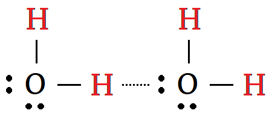

Hydrogen Bonds
Water is an angular molecule (104°) formed when two hydrogen atoms for covalent bonds with an oxygen atom.

- The sharing of the electrons is not equal. Oxygen keeps more of the shared electrons than hydrogen.
- Water is a polar molecule; the oxygen side is slightly negative and the hydrogen side is slightly positive.
- As a result, hydrogen is on the lookout for a better opportunity.
- The hydrogen atoms in H2O will attract to the unbonded pairs of electrons in adjacent molecules.

- This attraction of a hydrogen atom in one molecule to electrons in an adjacent molecule is called a hydrogen bond.
- Hydrogen bonds are not as strong as intramolecular (ionic or covalent) bonds, but they are very strong for an intermolecular force.